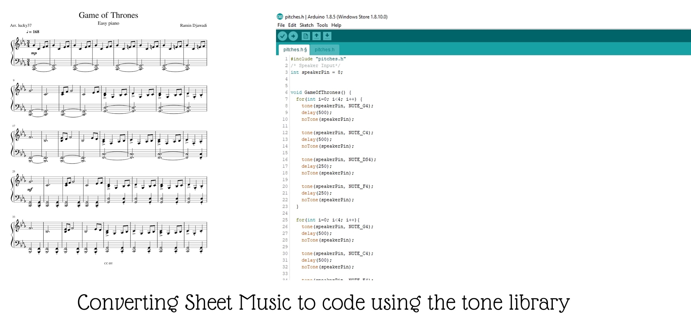

Day two started with me oversleeping and almost being late for the session that morning, but luckily, I managed to shake off the sleep.
Things didn’t go according to plan at first because two of my team members were a bit reluctant to communicate, but as we got talking and ideating, things were starting to go a little bit better, and we got multiple solid ideas, and decided to keep finding more ideas, but we got a little too caught up in it, and couldn’t manage our time properly and by the end of the session, though we had finalized on a specific idea, we decided on it far too late; we were supposed to make a toy for children, something that helps them learn something. Our finalized idea was to make a configurable music box, which can produce simple musical notes ( just C Major scale) to help develop a child’s listening and creativity; the concept was similar to a traditional music box, with holes in the drum to allow musical pins to be added, and customized, and controlled by a servo.
Though we made the concept and fleshed out the actual design, bringing it to physicality was where my newly formed team was put to the test; and by the end of our deadline in the evening, we were unsuccessful in building it fully. I programmed an Arduino UNO R3 Board along with speakers to make preset songs (so that the child can try to imitate the music), and I finished the coding, but we hit a roadblock with the mechanical parts, and we took too much time and made a lot of mistakes.
Even though we failed miserably at what we were trying to get to, we learned a lot; it was my first time coding on an Arduino, a skill which I had to learn in one night; I figured out how to use the tone libraries, and convert sheet music into code by converting the sheet music of the main theme from Game of thrones, and transcribed the notes, then used the tones library to recreate the sound on a speaker.

Failing on the first task took a hit on me for a few minutes, because I blamed myself for not being able to lead my team well enough, but as Rajesh sir kept reminding us that failure is not a bad thing, I overcame it and thought of using that failure to push myself harder than ever before.
The last session we had after dinner involved Dhruv explaining to us how Fab Academy and Fab Labs worked, and also a small summary on working on our resumes and documenting our work (something which I had a poor track record of until then), after the session, we had an ice-breaking session with those of us that were still at the lab, we played a game similar to Charades, and it was really fun because the mentors also joined in!